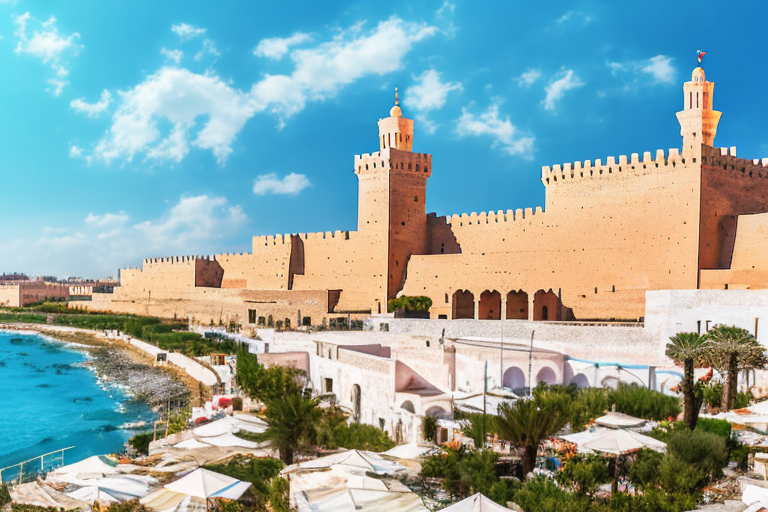
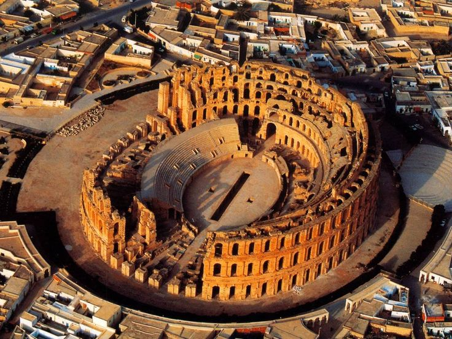

Welcome to Mahdia!
Mahdia is a coastal town in Tunisia, known for its picturesque beaches, historical sites, and cultural significance. It was founded in the 10th century and has since served as an important port city, particularly during the Fatimid Caliphate. The town features a medina (old town) with narrow winding streets, traditional markets, and historic mosques, such as the Great Mosque of Mahdia. Its beaches attract tourists seeking sun, sand, and water activities.
Relax on Pristine Beaches:
Indulge in sun-drenched days on Mahdia's pristine beaches, where soft golden sands meet crystal-clear turquoise waters. Visitors can enjoy:
- Golden Sands Beach - Free
- Crystal Waters Beach - Free
- Snorkeling Equipment Rental - $10 per hour
- Scuba Diving Package - $50 for a half-day session

Savor Tunisian Cuisine:
Tantalize your taste buds with the flavors of Tunisia at Mahdia's seaside restaurants and traditional eateries. From fresh seafood delicacies to aromatic tagines and sweet pastries, our culinary delights include:
- Freshly caught grilled fish
- Tunisian couscous with lamb or chicken
- Harissa-spiced merguez sausages
- Mahdia-style seafood paella
- Baklava and other Tunisian pastries

Experience Authentic Culture:
Immerse yourself in the vibrant culture of Mahdia, where Arabic, Berber, and Mediterranean influences blend harmoniously. Experience:
- Exploring the narrow streets of the Medina
- Shopping for handmade crafts
- Engaging with friendly locals eager to share their traditions
Landmarks:
These landmarks showcase impressive Roman architecture and history, offering visitors a fascinating journey through Mahdia's past.
- The historic Old Town: Wander through narrow cobblestone streets lined with centuries-old buildings, offering a glimpse into Mahdia's rich history and culture.
- The Great Mosque of Mahdia: Marvel at the intricate Islamic architecture of this iconic mosque, which has stood as a symbol of faith and community for centuries.
- The Fatimid Port: Explore the bustling harbor, where colorful fishing boats bob in the gentle Mediterranean breeze, and soak in the vibrant atmosphere of Mahdia's maritime heritage.
- The renowned El Jem Colosseum: Visit this UNESCO World Heritage Site located nearby, and step back in time to ancient Rome as you admire the grandeur of one of the largest and best-preserved Roman amphitheaters in the world. Marvel at its impressive architecture and immerse yourself in the history of gladiator battles and public spectacles.

Tourist Attractions near Mahdia
Monastir: Visit the coastal city of Monastir, known for its sandy beaches, historic Ribat fortress, and the impressive Bourguiba Mausoleum dedicated to Tunisia's first president. Monastir is approximately a 1 hour drive away from Mahdia.
Sousse: Explore the bustling city of Sousse, renowned for its well-preserved medina, ancient city walls, and the iconic Ribat of Sousse, a medieval fortress offering panoramic views of the city and sea. Sousse is about a 1 hour drive away from Mahdia.
El Djem: Discover the ancient Roman amphitheater of El Djem, one of the largest in the world and a UNESCO World Heritage Site. Marvel at:
- Its colossal size and grandeur, standing as a testament to the architectural prowess of the ancient Romans
- The intricate details of its construction, from the massive stone blocks to the elaborate arches and columns
- The well-preserved arena floor, where gladiators once battled and crowds roared in excitement
- The towering walls and impressive seating tiers, offering a glimpse into the scale of ancient Roman entertainment
El Djem is approximately a 1-hour drive away from Mahdia, beckoning history enthusiasts and curious travelers alike to explore its ancient splendor.
Additional Information:
| Population: | 76,513(2023) |
|---|---|
| Area: | 120.3 km² ≈ 46 miles² |
| Common Languages: | Arabic, French |
| Means of Transportation: | Taxis, buses, car rentals |
| Official Currency: | Tunisian Dinar (TND) |
| Time Zone: | Central European Time (GMT+1) |